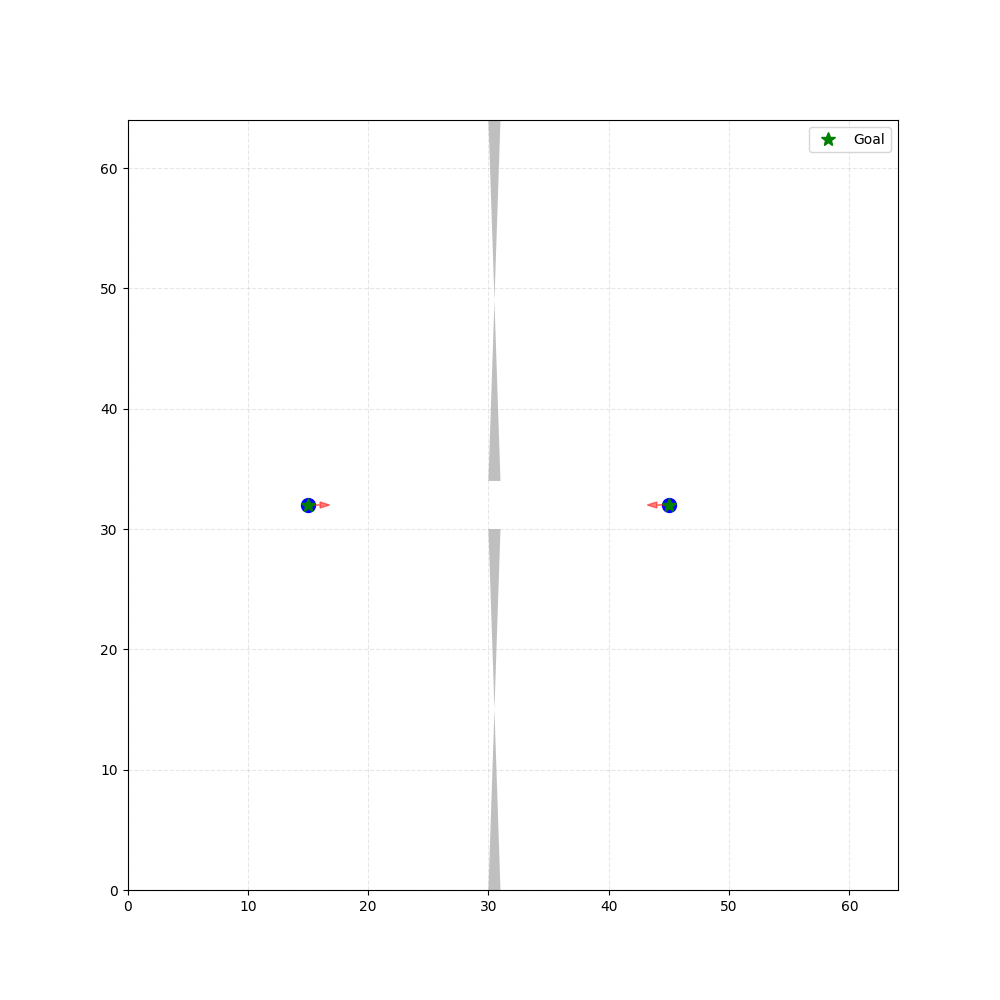
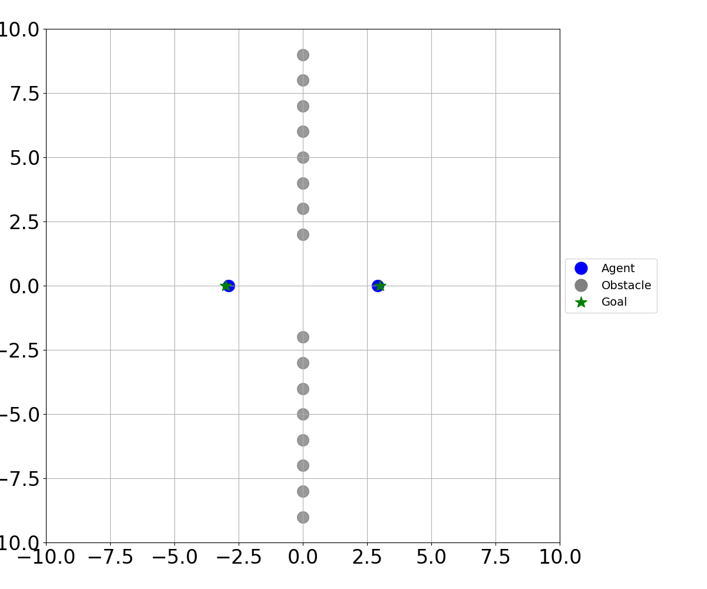
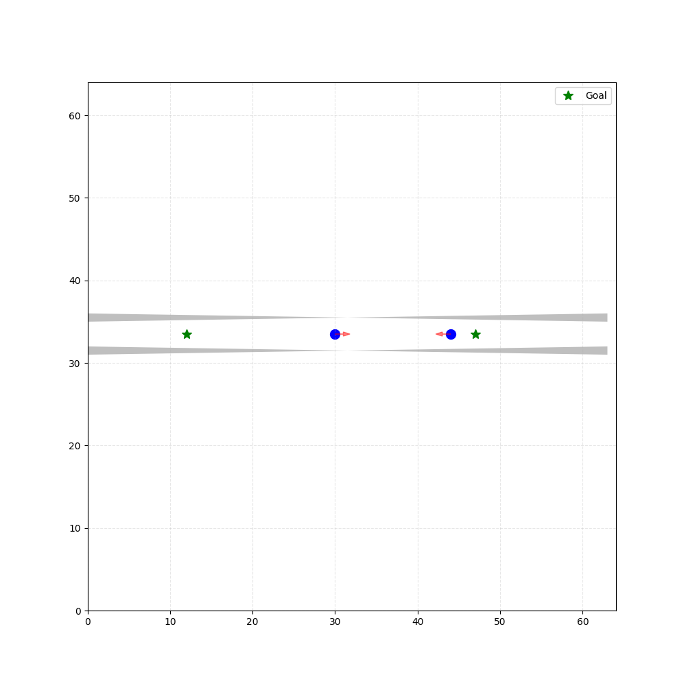

Demonstrating Representative SMG Solvers
Doorway SMG
Social-ORCA
IMPC-DR

CADRL
Hallway SMG
Social-ORCA
IMPC-DR

The ``Last Mile Challenge'' has long been considered an important, yet unsolved, challenge for autonomous vehicles, public service robots, and delivery robots. A central issue in this challenge is the ability of robots to navigate constrained and cluttered environments (e.g., doorways, hallways, corridor intersections), often while competing for space with other robots and humans. We refer to these environments as ``Social Mini-Games'' (SMGs). SMGs are tightly coupled, high-agency interactions that arise within general multi-robot navigation (MRN) scenarios. They are identified through certain distinct characteristics and require specialized metrics to evaluate them. Traditional navigation approaches designed for MRN do not perform well in SMGs, which has led to focused research on dedicated SMG solvers (navigation methods specialized to navigate in SMGs), which has flourished in recent years. However, publications on SMG navigation research make different assumptions (on centralized versus decentralized, observability, communication, cooperation, etc.), and have different objective functions (safety versus liveness). These assumptions and objectives are sometimes implicitly assumed or described informally. This makes it difficult to establish appropriate baselines for comparison in research papers, as well as making it difficult for practitioners to find the papers relevant to their concrete application. Such ad-hoc representation of the field also presents a barrier to new researchers wanting to start research in this area. SMG navigation research requires its own taxonomy, definitions, and evaluation protocols to guide effective research moving forward. This survey is the first to catalog SMG solvers using a well-defined and unified taxonomy and to classify existing methods accordingly. It also discusses the essential properties of SMG solvers, defines what SMGs are and how they appear in practice, outlines how to evaluate SMG solvers, and highlights the differences between SMG solvers and general navigation systems. The survey concludes with an overview of future directions and open challenges in the field.
@misc{chandra2025socialminigames,
title={Multi-Robot Navigation in Social Mini-Games: Definitions, Taxonomy, and Algorithms},
author={Rohan Chandra and Shubham Singh and Abhishek Jha and Dannon Andrade and Hriday Sainathuni and Katia Sycara},
year={2025},
eprint={2508.13459},
archivePrefix={arXiv},
primaryClass={cs.RO},
url={https://arxiv.org/abs/2508.13459},
}